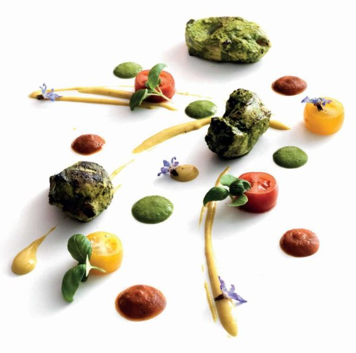

Basil chicken tikka with tomatoes (Tulsi ka tikka aur timater)

I love this recipe – it’s simple with bang-on flavours. The combination of tomatoes and basil works everywhere, irrespective of the country. I have used it in grills, curries, breads and even desserts! The tomato paste recipe makes more than you need for this dish, but I also like it in toasted cheese sandwiches and to serve alongside sliced cold cuts. You won’t waste the leftover amount, I promise you.
For the tomato paste
For the basil marinade
For the curried mayonnaise
First make the tomato paste, which will keep for up to 2 weeks in a covered container in the fridge. Heat the oil in a large saucepan, add the cardamom pods and cumin seeds and sauté over a medium heat until the spices crackle. Add the ginger, garlic and onion and sauté for a further 3–5 minutes until the onion is translucent. Add the tomatoes and ground spices and stir for 4–5 minutes until the tomatoes start to break down. Stir in the sugar, vinegar and salt to taste, and simmer for 10–12 minutes until the tomatoes are cooked and the flavours blended. Remove the pan from the heat and leave the tomato mixture to cool completely, then purée in a blender or food processor. Cover and chill until required, then loosen with the water, if necessary. Remove it from the fridge in enough time for it to reach room temperature before serving.
Put all the marinade ingredients in a clean blender or food processor and blend to a fine paste. Rub the paste all over the chicken pieces, then set aside to marinate in the fridge for 2 hours.
Meanwhile, mix all the ingredients for the curried mayonnaise together, cover and chill until required.
After the chicken has marinated, preheat the oven to 200°C. Place the chicken pieces with their marinade, butter and oil in a roasting tray lined with a non-stick oven mat, and roast for 10 minutes, basting twice with the butter and oil mixture, or until the pieces are cooked through and the juices run clear when they are pierced with the tip of a knife. Leave to rest for 5 minutes, covered with kitchen foil.
Arrange the chicken pieces, tomato paste, curried mayonnaise, chutney and halved baby tomatoes on the plates in an abstract presentation. Garnish and serve immediately.